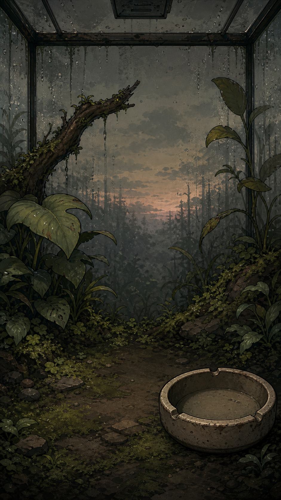
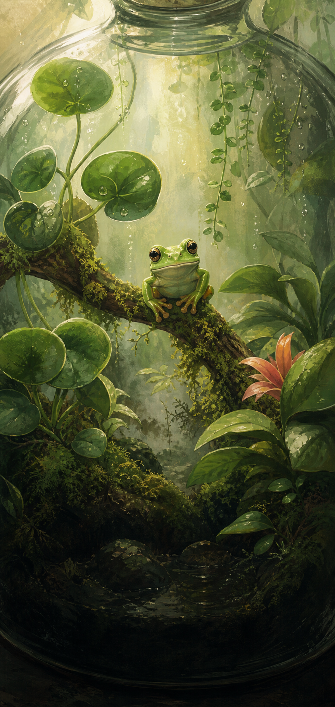

18°Сутінки
Вона чекала на тебе
Квакі
Деревна жаба · Рівень 7
ТЕРАРІУМ 01

Деревна жаба · Рівень 7
ЗАПАСИ
Делікатеси та догляд для Квакі.
Ситість +30
Ситість +45
Настрій +20
Вологість +35
АРХІВ ВИДІВ
1 із 12 видів уже живе у вашому заповіднику.

Звичайний вид · рівень 7
Відкриється на 15 рівні
Невідомі умови
Нове яйце
ОСОБИСТЕ
Зміни мову та правила цієї історії.
Спочатку визначається через Telegram.
Коли тебе довго немає, воля Квакі згасає. Повертайся, говори з нею і не дай тиші перемогти.